DIW Platform — Material Extrusion 3D Printing System

Direct Ink Writing (DIW) 3D printing platform developed at NUS CDE AML Lab. This system adapts mainstream 3D printing hardware (MKS-Monster8 + Marlin) for room-temperature material extrusion, enabling precise deposition of functional inks (cement pastes, gels, slurries, etc.).
Table of Contents
- Introduction - 1.1 System Overview - 1.2 Controller Board & Firmware - 1.3 Stepper Motors, Drivers & Endstops - 1.4 Pressure Dispenser
- Getting Started - 2.1 Prepare G-Code - 2.2 Connection & Communication
- Tips & Troubleshooting
- Support Materials
1. Introduction
Fixture2 and assembly1 are available in the 3Dmodels directory.
Figure 1. Overview of DIW platform: (1) Fluid dispenser, (2) Step motor driver box, (3) Controller board, (4) Motion control platform, (5) Syringe barrel, (6) Substrate.
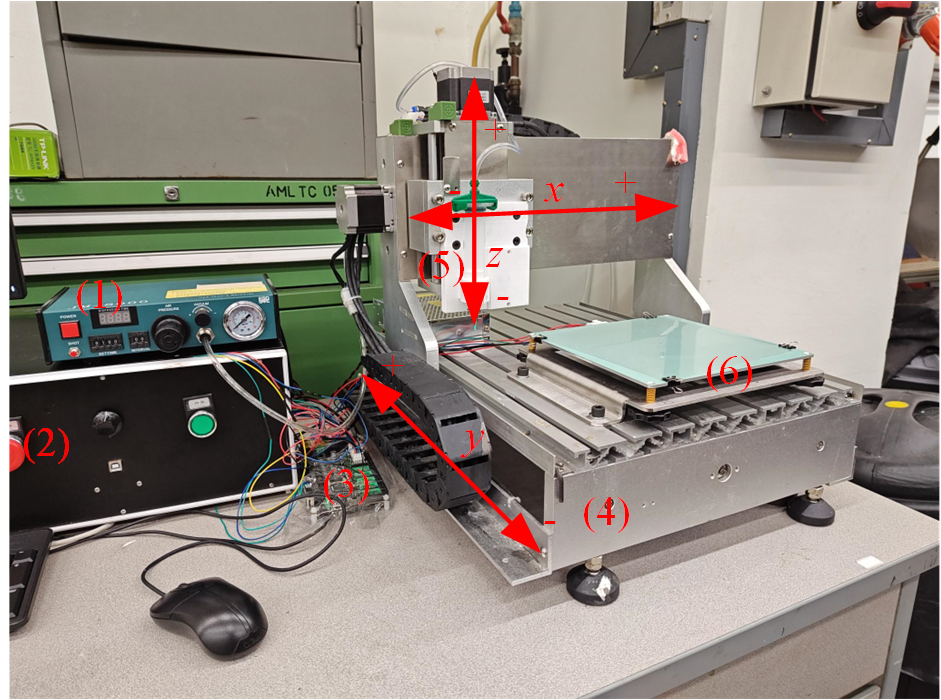
The platform consists of a controller board, fluid dispenser, and a 3-axis motion platform. The wiring connections between components are illustrated below:
Figure 2. DIW platform wiring diagram.
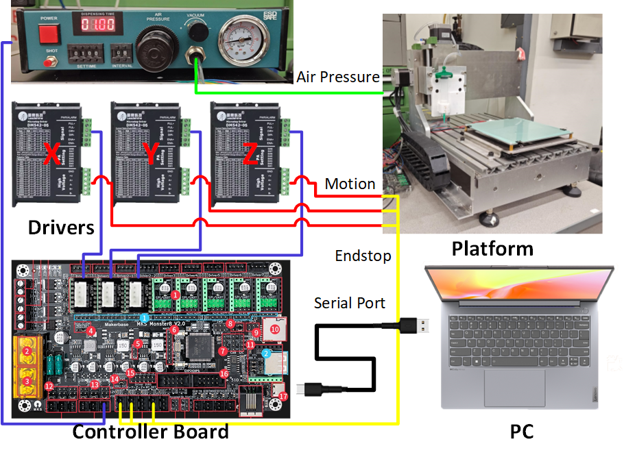
1.1 System Overview
| Component | Specification |
|---|---|
| Controller | MKS-Monster8 (STM32F407VET6, 168MHz) |
| Motors | 57 stepper motors × 3 axes |
| Dispenser | JND-983A pneumatic dispensing valve |
| Nozzles | 0.4 mm / 0.8 mm diameter |
| Firmware | Marlin 2.1.2.4 (customized) |
| Slicer | PrusaSlicer 2.7.4 |
| Host Software | Pronterface |
1.2 Controller Board & Firmware
The controller uses the MKS-Monster8 board from MakerBase, supporting mainstream 3D printing firmware (Marlin, Klipper).
Figure 3. MKS-Monster8 controller board.
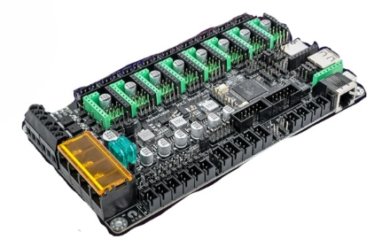
References: GitHub | Video Guide | Marlin Setup | Klipper Setup
Technical Parameters
- MCU: STM32F407VET6 (168MHz, 512KB Flash, 192KB RAM)
- Power Supply: DC 12-24V input (2× MP1584EN outputs: DC12V for fans, DC5V)
- Fans: 3× PWM fans + 3× power outputs (selectable via jumper: VIN/DC12V/DC5V)
- Motors: 9 driver interfaces (Driver 0-7)
- Displays: EXP1/EXP2 for MKS MINI12864, MKS TS35, LCD12864, LCD2004
- Serial: USART1 (PA9/PA10) for MKS Robin or custom serial communication
- Endstops: 6 inputs with power selection (X-, X+, Y-, Y+, Z-, Z+) + 3D TOUCH (PA8)
- Storage: 4KB EEPROM (I2C), onboard microSD card (SPI)
- Communication: CAN transceiver, SPI interface, virtual USB device, UDISK
- Drivers: TMC UART/SPI modes, SENSORLESS_HOMING (Diag0-5)
- Driver Voltage: Selectable 5V/3.3V
- Protection: TVS spike protection, reverse connection protection
- Boot Mode: DFU via Boot0 button
Figure 4-5. Pinout and connector layout.
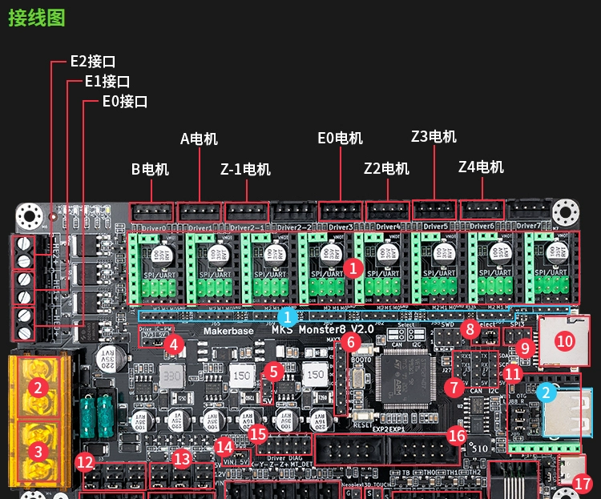
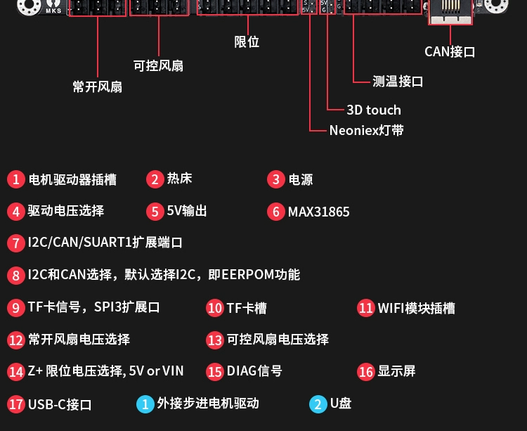
Wiring Configuration
Our platform controls X/Y/Z axes only — no extrusion heating is required. The hot bed is reserved for the substrate, and the fan control port is repurposed for air pressure switch control and limit switches.
Figure 6. Control board wiring for DIW platform.
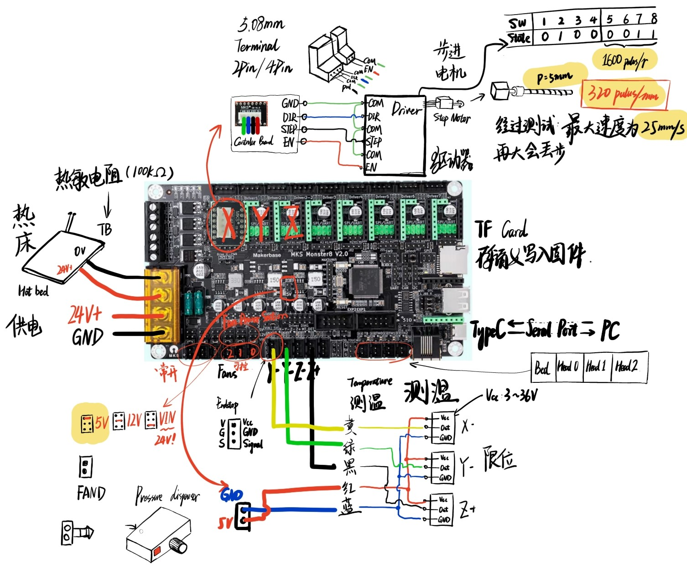
Firmware Configuration
Note: Only modify the firmware if you need to adjust parameters or troubleshoot. The default configuration requires no changes.
Marlin is the most widely used open-source 3D printing firmware. Key customizations for this platform:
- G05 spline interpolation — enabled for smooth motion
- XYZ 3-axis configuration — pulse equivalent set (pulses per mm for each axis)
- Cold extrusion protection disabled — temperature sensor off, minimum extrusion temperature set to 0°C
- Build volume — adjusted to match actual travel range
- Homing direction — set to X-, Y-, Z+
Development Environment: VS Code with PlatformIO extension
Resources:
- Marlin official: https://marlinfw.org/
- Original config: https://github.com/MarlinFirmware/Configurations/tree/release-2.1.2.4
- Custom Marlin build: https://lecloud.lenovo.com/share/2JQMt9CWcRS9uVE4x (password: pgjg)
1.3 Stepper Motors, Drivers & Endstops
Stepper Motors
The platform uses 57-series stepper motors (NEMA-23) for all three axes.
Working Principle: Position control via pulse signals. Each pulse rotates the motor by a specific angle. For a standard 57 stepper:
- Step angle (θ): 0.8° (1 pulse = 0.8° rotation)
- Microstepping: Driver divides each step by coefficient
n, effective step angle = θ/n - Accuracy note: Microstepping beyond 32× yields diminishing accuracy returns; higher settings primarily improve smoothness
Driver Configuration
Figure 7. Driver dip switch settings (highlighted = original configuration used).
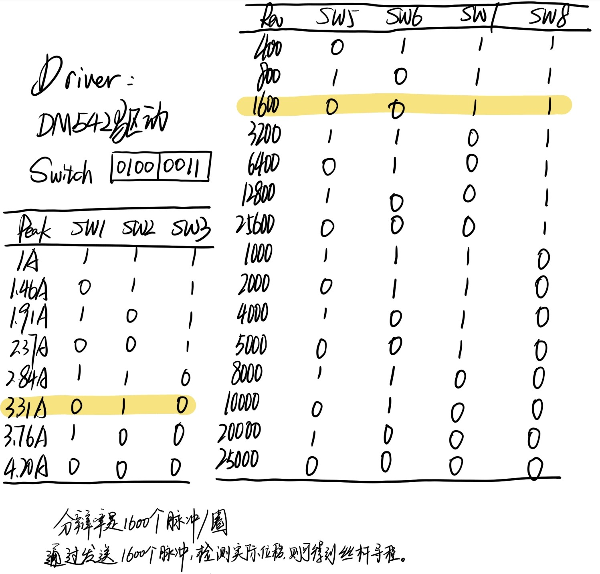
Current peak value and microstepping resolution are configured via dip switches on the driver.
Motor Wiring
Figure 8. Original stepper motor wiring reference.
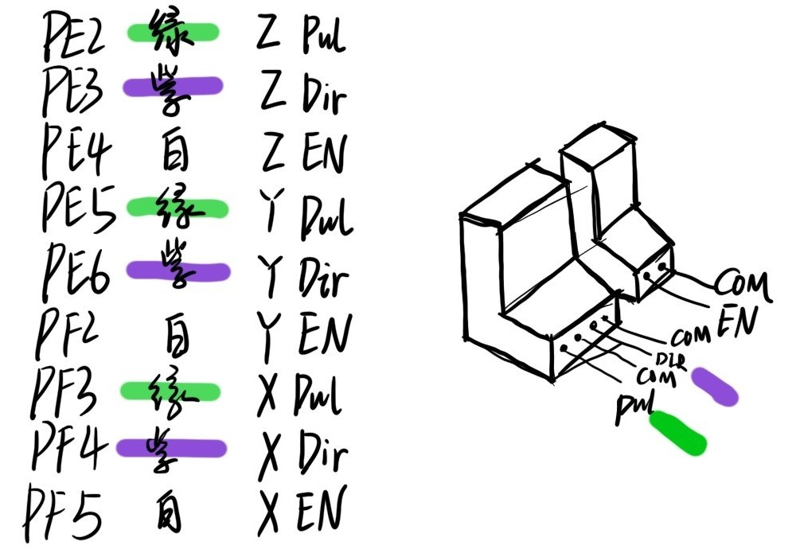
An adapter board interfaces with the controller. Terminals: COM (ground), Enable, Pulse, Direction. Wire color coding:
Figure 9. Stepper motor cable color reference.
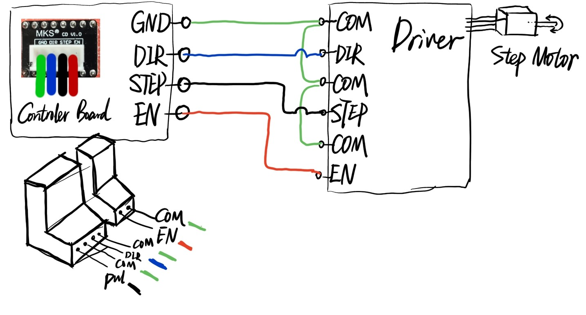
Endstop Sensors
Figure 10. Endstop wiring configuration.
⚠️ Important: The default 5V supply proved unreliable during testing. Endstop sensors require 24V (rated 0-24V). Adjust the wire connection to select the appropriate voltage — the Z+ endstop supports both voltage options via jumper selection.

1.4 Pressure Dispenser
The pneumatic switch is controlled via the fan output port: the controller adjusts the voltage to 24V, triggering a relay module that switches the pressure dispenser on/off.
Technical Specifications
| Parameter | Value |
|---|---|
| Dispensing Modes | 16 programmable modes with time display |
| Dispensing Time | 0.01–99.99 s |
| Interval Time | 0.1–9.9 s (auto mode) |
| Input Voltage | 220V±10% 50Hz / 110V±10% 60Hz |
| Control Voltage | 12VDC / 24VDC |
| Input Pressure | 10–100 PSI |
| Output Pressure | 1–80 PSI |
| Dimensions | 235×225×63 mm |
| Weight | 2.8 kg |
Mode Configuration
The 4-position DIP switch on the rear panel selects between 16 dispensing modes. Full manual: JND-983A dispensing guide
| Mode | S1 | S2 | S3 | S4 | Function |
|---|---|---|---|---|---|
| 1 | Off | Off | Off | Off | Inching — hold to extrude, release to stop |
| 2 | On | Off | On | On | Hold — press once to start timed extrusion, press again to stop |
| 3 | Off | On | On | On | Inching timing — hold for timed extrusion |
| 4 | On | On | On | On | Auto continuous — extrude according to set time |
| 5 | On | Off | Off | Off | Single-shot — 1 dispense per press |
| 6 | Off | On | Off | Off | Single-shot — 2 dispenses per press |
| 7 | On | On | Off | Off | Single-shot — 3 dispenses per press |
| 8 | Off | Off | On | Off | Single-shot — 4 dispenses per press |
| 9 | On | Off | On | Off | Single-shot — 5 dispenses per press |
| 10 | Off | On | On | Off | Single-shot — 6 dispenses per press |
| 11 | On | On | On | Off | Single-shot — 7 dispenses per press |
| 12 | Off | Off | Off | On | Single-shot — 8 dispenses per press |
| 13 | On | Off | Off | On | Single-shot — 9 dispenses per press |
| 14 | Off | On | Off | On | Single-shot — 10 dispenses per press |
| 15 | On | On | Off | On | Single-shot — 11 dispenses per press |
| 16 | Off | Off | On | On | Single-shot — 12 dispenses per press |
Note: This platform uses Mode 1 (Inching).
Operation
- Pressure adjustment — rotate the black knob to set output pressure
- Manual trigger — press the red button on the left side, or use an external foot pedal (modified for program control)
Additional Resources
- Syringe barrel 3D model (SolidWorks)
- Nozzle 3D model (SolidWorks)
- Nozzle data sheet
2. Getting Started
Prerequisite: Request compressed air supply from the Lab admin before first use.
Workflow Overview
3D Model → PrusaSlicer → G-code Editing → Pronterface → Controller Board
↓
┌─────────┴──────────┐
↓ ↓
XYZ Stepper Motors Fan Port (M106/M107)
(position control) → Relay → Pressure valve
The PC sends G-code to the controller board's serial buffer. The board decodes and interpolates the instructions into control signals (enable, direction, pulse) for the stepper motor drivers. Meanwhile, M106/M107 commands control the fan port voltage, triggering the relay to switch the pneumatic valve on/off.
2.1 Prepare G-Code
Slicing Software
PrusaSlicer (Recommended)
PrusaSlicer is an actively maintained fork of Slic3r with an active community and fewer bugs.
- Download: https://www.prusa3d.com/page/prusaslicer_424/
Figure 11. PrusaSlicer interface.
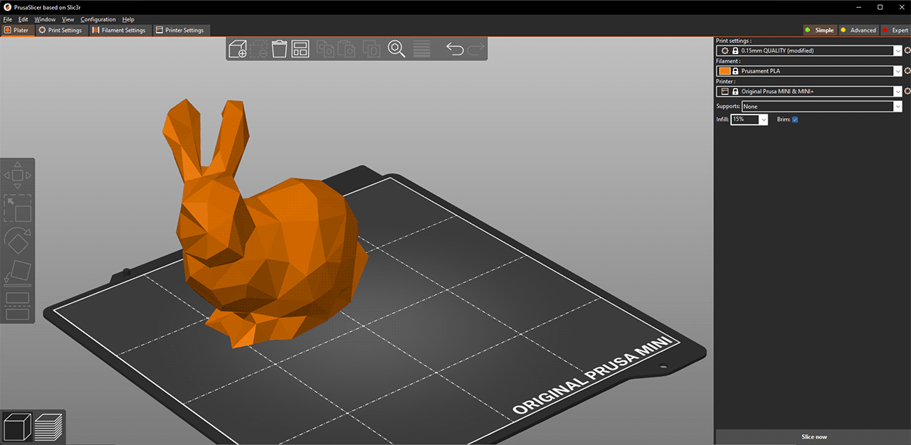
Customized profiles for the AML DIW platform are provided for both 0.4mm3 and 0.8mm4 nozzles.
Slic3r (Legacy)
⚠️ Slic3r is no longer maintained and contains known bugs. Use PrusaSlicer instead.
- Download: https://slic3r.org/
Figure 12. Slic3r interface.
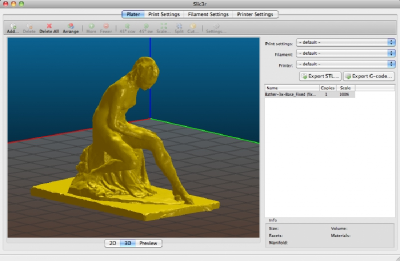
2.2 Connection & Communication
Step 1: Connect Controller to PC
Connect the controller board via USB. Identify the COM port:
- Windows 10 and earlier: Right-click "This PC" → Manage → Device Manager → Ports (COM & LPT)
- Windows 11: Shift + Right-click "This PC" → Manage → Device Manager → Ports (COM & LPT)
Figure 13. Identifying the COM port in Device Manager.
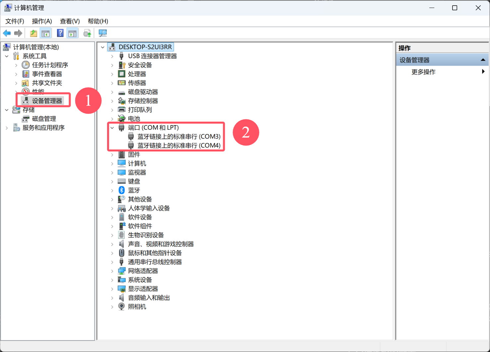
Step 2: Open Pronterface
Pronterface is the host interface for sending G-code to the controller.
- Download: https://www.pronterface.com/
Figure 14. Pronterface interface.
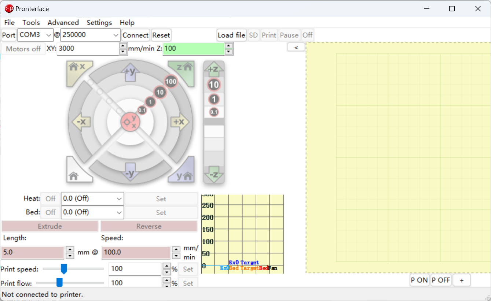
Select the correct COM port and baud rate, then click Connect:
Figure 15. Establishing connection in Pronterface.
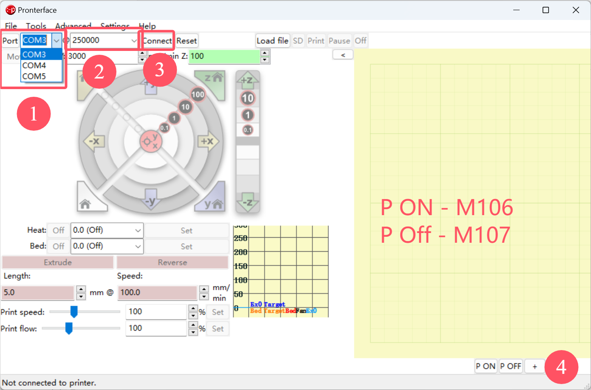
Verify the connection by manually controlling each axis and the pneumatic switch.
Tip: Marlin G-code reference — https://marlinfw.org/meta/gcode/
3. Tips & Troubleshooting
Editing G-code with Notepad++
Notepad++ supports macro recording, which is invaluable for batch G-code editing.
Figure 16. Macro recording in Notepad++.
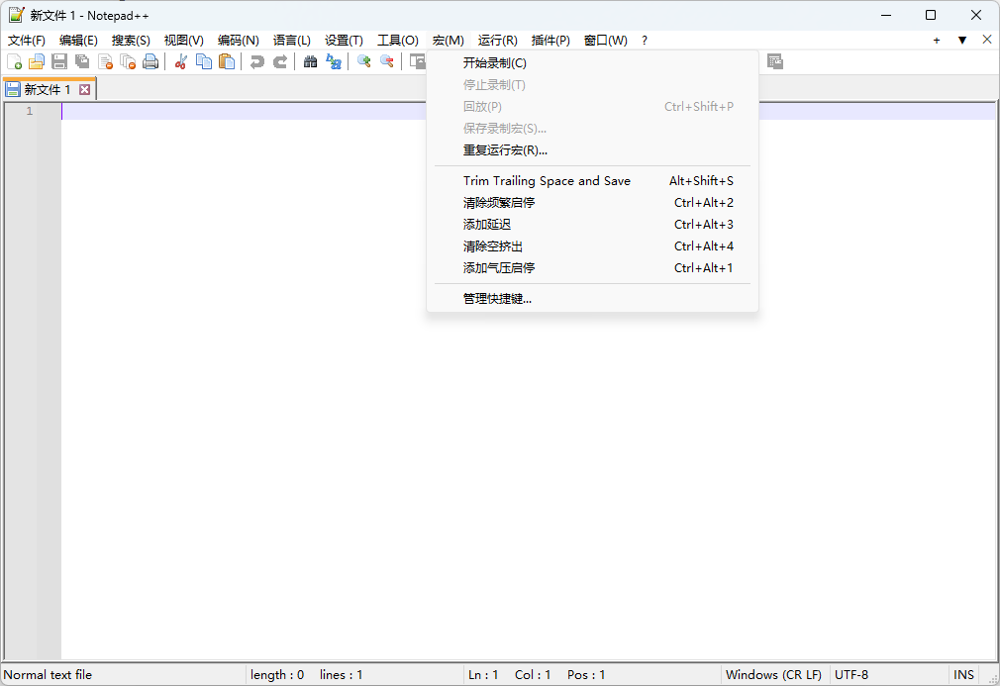
Macro Recording Best Practices
- Use keyboard shortcuts — avoid mouse clicks during recording. Use
Home/Endinstead of arrow keys to move the cursor - Mind the end cursor position — ensure the final cursor position doesn't cause the macro's search to loop infinitely
- Use escape characters — e.g., replace
M106\nM106(duplicate lines) with a singleM106using regex search/replace
Common Issues
| Issue | Solution |
|---|---|
| Endstops not triggering | Verify 24V supply (5V is insufficient) |
| Inconsistent extrusion | Check compressed air pressure (10-100 PSI input, 1-80 PSI output) |
| Firmware won't compile | Use VS Code + PlatformIO; verify correct board settings |
| Pronterface can't connect | Confirm COM port and baud rate match the firmware configuration |
Support Materials
| # | Resource | Link |
|---|---|---|
| 1 | Pressure dispenser manual | JND-983A 点胶机详细功能设置.docx |
| 2 | Syringe barrel 3D model (SLDPRT) | syringe.zip |
| 3 | Nozzle 3D model (SLDPRT) | tips.rar |
| 4 | Nozzle data sheet | 技术表格.pdf |
| 5 | Assembly — Z-axis carriage (STEP) | Assembly-Carriage-Z.STEP |
| 6 | Printable fixtures (STL) | STLs |
| 7 | PrusaSlicer profile — 0.41mm nozzle | Set_Blue.ini |
| 8 | PrusaSlicer profile — 0.84mm nozzle | Set_Green.ini |
Maintained by NUS CDE AML Lab · License: GPL v3 · Last updated: 2026-10-16